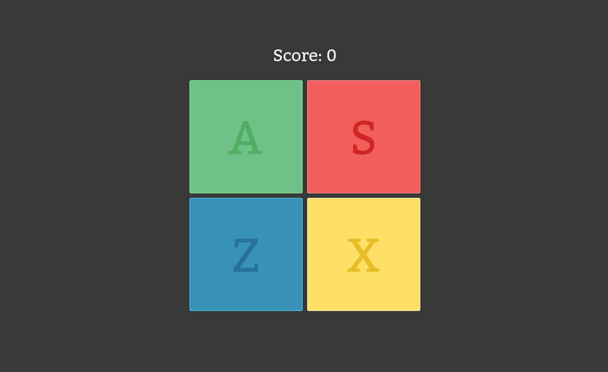
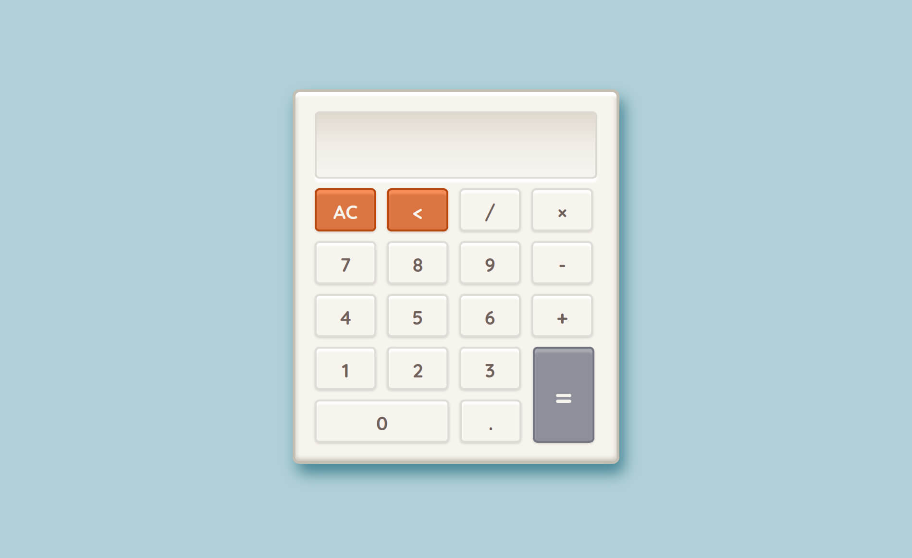
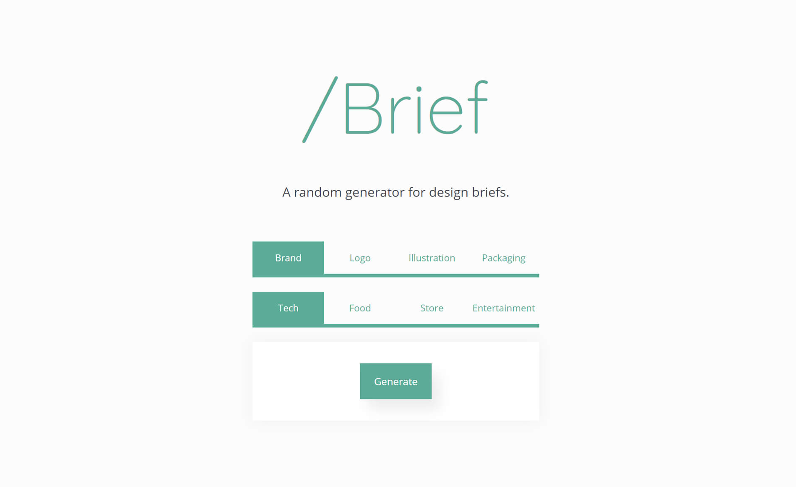

^Portfolio
Simon Says
A full game with graphics and sound.
In an attempt to teach myself Python and Pygame, I decided to build the classic game of Simon Says. Pygame doesn't have a built in rounded-rectangles method, so the hardest challenge in this project was actually getting the four buttons to display properly, with subtle outlines and all.
Download the project (Python required).Calc
A working calculator.
A quick exercise to practice both my Javascript and CSS skills. I designed and coded a simple calculator on CodePen, which can perform basic addition, subtraction, multiplication, and division. A lot of work was put into making the calculator behave how the user would expect.
See the project.Brief
A randomized design brief generator.
Design students are always looking to add to my portfolio. But without experience, it is difficult to get professional work. Enter Brief. It generates random design briefs—the document with all the specifications for the design that a hypothetical client would give you. I used Javascript and jQuery to generate the briefs based on the set of preferences selected by the user.
See the project.Tic-Tac-Toe
Working game with computer opponent.

The classic game of tic-tac-toe, written in Javascript. The biggest challenge was figuring out the right algorithm for the computer opponent. The trick was actually making sure it wasn't so good that you could never win. In the end I found that having the computer make a mistake 3/7 times was a good balance.
See the project.